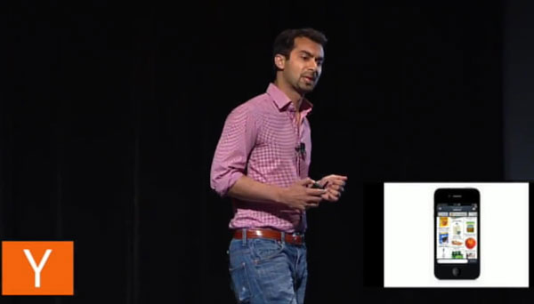

Instacart是一家生鲜食品网络采购平台，相当于生鲜食品采购的Uber/滴滴打车模式：用户通过Instacart应用下订单，附近的采购人员接单，去应用支持的商店购买物品，然后运送给用户，这里的采购人员并不属于Instacart，类似于滴滴打车里司机的角色。而Instacart应用本身只是一个软件平台，它没有自己的商店、货物、采购运送人员或者汽车等。
Instacart成立于2012年7月，到2016年4月，已经完成六轮融资，累计2.75亿美金，最近2016年3月的投资来自Whole Foods Market（投资金额未公开）。如今市值超过20亿美金。
创业是一种梦想
故事从2010年1月说起，80后的Apoorva Mehta在亚马逊已经工作了2年，作为一个开发工程师，他在亚马逊学到了很多，但同时也开始对公司里缓慢官僚的气氛有些感到厌倦，他希望有所改变。由于一直都有创业的梦想，他开始参加西雅图的各种投资人、创业者的聚会。在聚会上，大家讨论着各种他从未听说过的概念，可转换债券、A轮投资、天使投资、风险投资、客户、企业家……。面对这种情况，年轻的Apoorva并没有气馁，他开始努力学习创业相关的知识，阅读各种书籍，尽量和投资者、创业者进行交流沟通。同时因为本身是技术开发人员，Apoorva在一边了解创业知识的同时，一边利用自己的业余时间构想并开发一些产品。
但是很快，随着他创业的念头越来越强，开发自己产品投入的精力越来越多，他在亚马逊的同事们开始感到奇怪：Apoorva作为一个后台工程师，他的电脑上为什么总是打开着专门开发苹果手机端应用的Xcode软件？这时，Apoorva意识到他必须做出选择：离开亚马逊专职构思自己的创业计划。于是在2010年的6月，Apoorva从亚马逊辞职。
在辞职整整四年后的一次演讲中，他说，当时他感到非常担心和不确定。因为当时的他并没有明确创业的方向，他所抱有的只是一个创业的梦想，而且这个想法越来越强烈。

不要为了创业而创业
告别亚马逊，告别西雅图，Apoorva很快背上行囊搬到了阳光明媚的旧金山，这里是IT创业的天堂。在旧金山，他很快找到一位合作者，大家一起开始了共同的创业生涯。
生活从来都不可能一帆风顺，创业更是如此。在接下来的时间里，Apoorva和他的搭档尝试了各种各样的创业构想，比如针对广告商的分析平台，又比如专门做食品的GroupOn式拍卖产品……，他们总共开发了不下20种产品，但是结果都只有一个：失败。
转眼离Apoorva辞职已经有12个月的时间了，他开始怀疑自己当年离开亚马逊的决断是否正确，甚至怀疑自己是否适合创业。就在这个时候，他们又想到了一个点子：“针对律师的社交网络”。律师们可以通过这个网络建立联系、分享想法。他们认为这是一个非常棒的主意，因为美国的律师市场非常庞大，他们相信这个产品一定会带领他们走出失败，创造辉煌！
于是他们开始开发产品、招募人员、寻找投资……一派红火场面。但是他们忽略了一件事，一件对于创业、对于产品开发至关重要的事情：他们并不了解律师，如同后来Apoorva承认的，他完全没有和律师一起合作和工作的任何经历。换句话说，Apoorva和他的搭档在为他们没什么了解的用户开发产品，并试图通过该产品解决一个他们也不知道对方有没有的问题。
结果不难猜到，经过又是半年的打拼，在不断的与律师进行交流、不断的调整产品的思路之后，Apoorva终于认识到，这个“面向律师的社交网络”还是失败。最终他选择退出这个最初的创业团队。
一年半创业失败的经历教育了Apoorva，让他终于认识到：创业的目的不能是为了创业，创业的目的应该是为了解决一个你非常在意的问题。
解决真正的问题
无论在西雅图还是在旧金山，Apoorva一直以来都不喜欢去超市、食品杂货店买食物，每次又不得不去采购些吃的喝的。他讨厌在超市里一道一道的找，选好了还要排个长长的队结账，最后好不容易运回家，突然发现自己少买了几样必需品！
已经都什么年代了，大家在网络上买书、买衣服、买包、买电视冰箱、买汽车、买彩票……，可是人们还是必须每周去食品杂货店和各类超市里，以这种非常低效的方式购买自己的生活必需品。
Apoorva认识到自己的这个问题，他也充分了解自己的需求。于是在2012年春天，他开始开发一个新产品：Instacart，专门针对食杂购买的一款应用。
在开发Instacart时，Apoorva告诉自己，不完成开发就再也不去食杂店！于是直到2012年6月2日，他终于完成了开发，然后他在Instacart上下了第一个订单，接着自己再充当采购人员，去食杂店按照订单完成采购，最终运回给自己！——这是Instacart上的第一笔生意，而且马上开始赢利:-)
很快，Apoorva周围的朋友纷纷主动开始使用这个产品，这是他创业两年来第一次有了产品受欢迎的感受，而不是像过去的20多个产品那样，每次都要请求周围的人去接受、去试用。Apoorva相信这次他选对了产品！
绝不轻言放弃
有了一个受欢迎而且可以赢利的产品，Apoorva马上开始着手融资。他找到位于硅谷的著名孵化器机构Y Combinator，但是当时已经超过项目申请截止日期2个月了。尽管如此，Apoorva对自己的产品非常有信心，他相信只要YC的投资者体验了Instacart，他们一定会接受他的申请。
于是，他发动他的所有关系，24小时之内联系到YC的一些投资人，希望能加入申请。然后他焦急地等待回音。一个接着一个，回复都是：“绝对不行，太晚了！”。直到最后他收到Garry Tan的回复说：“你可以填一个延迟的申请表，但是现在想加入几乎不可能了”。正是因为这“几乎”两字，Apoorva看到了一线希望。同时他意识到，这些YC的投资人都并不知道Instacart是干什么用的，也不知道Instacart的与众不同。于是他打开应用，给Garry Tan订了6瓶啤酒，发送到位于硅谷的YC总部所在地。
不久Apoorva就接到了Garry Tan的电话，让他次日前往YC总部见面。第二天，Apoorva与YC的四位投资者进行了一个小时的会谈，他们询问了关于Instacart产品的各种问题，最后当他离开时，对方告诉他如果YC有投资意向，会和他联系的。久混职场的人都知道，这常常是一种客气拒绝的方法，而当Apoorva心灰意冷准备接受又一次失败时，十分钟后他就接到了YC的电话，他被YC孵化器录取了，获得了种子投资。
至此，Apoorva和他的Instacart开始进入了快速发展阶段。
下面是Instacart累计获得的投资：
- 2012年6月， 种子投资（未公开）
- 2012年10月，种子投资（$2.3M)
- 2013年4月，A轮（$8.5M）
- 2014年6月，B轮（$44M）
- 2015年1月，C轮（$220M）
- 2016年3月，未公开
从Apoorva的创业故事里，我们可以发现，对于创业者来说，一定要有从失败中快速恢复的能力，抱有梦想重头再来，因为每一次新的尝试都有可能是成功的开始。而在具体的操作中，产品的构思和设计又是至关重要的。